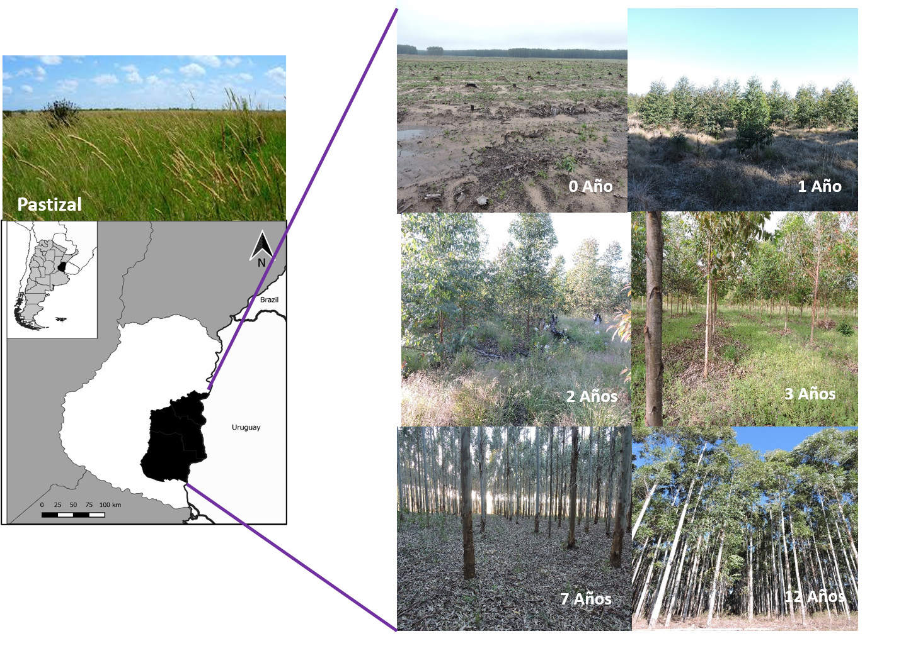
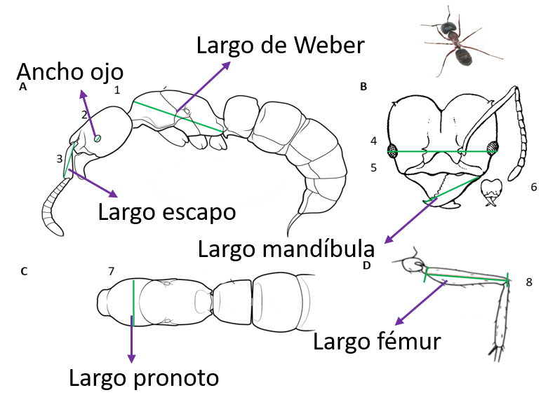
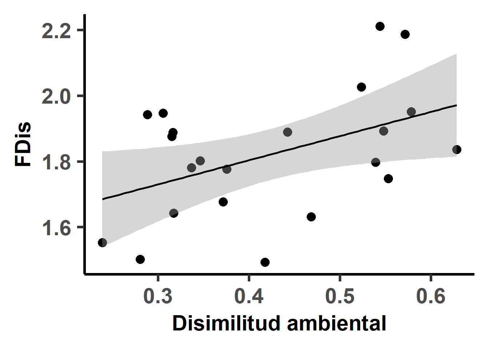
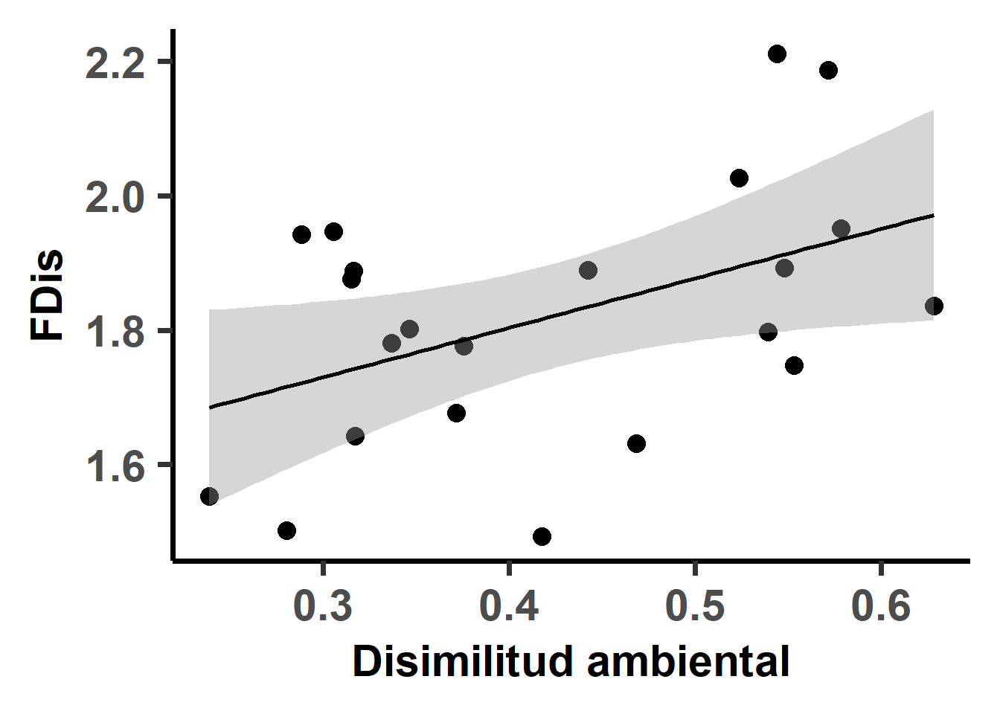
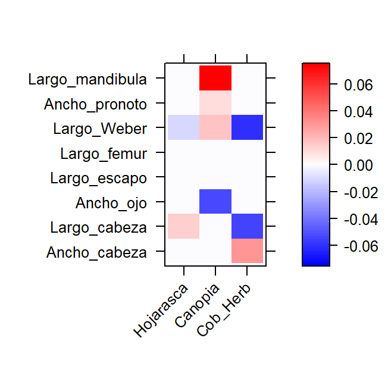

Mecanismos de formación de ensambles de hormigas dentro del ciclo forestal del eucalipto en la Pampa Mesopotámica: el rol de los procesos determinísticos y los factores abióticos
Pamela E. Pairo, Carolina Pinto, M. Isabel Bellocq
Laboratorio de Ecología de Comunidades y Macroecología, Facultad de Ciencias Exactas y Naturales, Universidad de Buenos Aires, Argentina.

Introducción
El cambio del uso del suelo es uno de los mayores responsables de la pérdida de biodiversidad en hábitats terrestres. Los cambios en las condiciones ambientales causados por los usos de la tierra fuerzan que solo algunas especies del conjunto regional de especies puedan adaptarse (pérdida de riqueza) y generan cambios en la estructura taxonómica y funcional de las comunidades. El filtrado ambiental es reconocido como el principal mecanismo formador de ensambles en hábitats antrópicos, aunque poco se sabe acerca del rol de otros procesos determinísticos. Los factores que regulan la presencia de las especies en los usos de la tierra se relacionan con los recursos y condiciones que caracterizan a los nuevos hábitats resultantes.
Objetivo: Determinar la acción de los procesos determinísticos en la formación de ensambles de hormigas epígeas en una cronosecuencia forestal de eucalipto e identificar asociaciones entre los rasgos funcionales y las variables ambientales (VA)
Métodos
Se seleccionaron plantaciones de 8 edades con tres réplicas por edad. Se colocaron 4 trampas de caída por réplica y se midieron las VA (temperatura, cobertura de herbáceas, canopia, altura de la hojarasca) en cada sitio. Se calculó la disimilitud ambiental (Indice de gower) entre cada edad de la plantación y los pastizales de referencia agrupados, el cual aumenta con la edad.  Los rasgos funcionales morfométricos relacionados el uso del recurso y estrategias de forrajeo fueron medidos en hormigas obreras para luego estimar la diversidad funcional (FDis). Además, se realizó el análisis de las cuatro esquinas para identificar asociaciones significativas entre las VA y los rasgos funcionales. 
Se compararon los valores de FDis de cada sitio con los esperados a partir del modelo nulo de formación de ensambles. La distribución nula de las especies se obtuvo a partir de generar 999 comunidades aleatorias por sitio utilizando el algoritmo richness. Luego, para determinar si los valores observados de FDis era menos o más de los esperado por el modelo nulo, se calculó el efecto del tamaño estandarizado (SES FDis) a partir de la siguiente fórmula: \[ SES FDis=\frac{FDis Obs- FDis nulo}{sd (FDis nulo)} \]
Resultados
La riqueza disminuyó significativamente con el aumento de la disimilitud ambiental (Devianza=-8.18, p<0.01).
 La diversidad funcional aumento significativamente con el aumento de la disimilitud ambiental (F=5.32, p=0.03).

Se observó un aumento de los valores de SES FDis con el aumento de la disimilitud ambiental (F=6.59 p=0.02).
La diversidad funcional aumento significativamente con el aumento de la disimilitud ambiental (F=5.32, p=0.03).

Se observó un aumento de los valores de SES FDis con el aumento de la disimilitud ambiental (F=6.59 p=0.02).

La siguiente Figura muestran las asociaciones positivas entre los rasgos funcionales medidos y las variables ambientales.
- Rojo: asociación +
- Azul: asociación - 